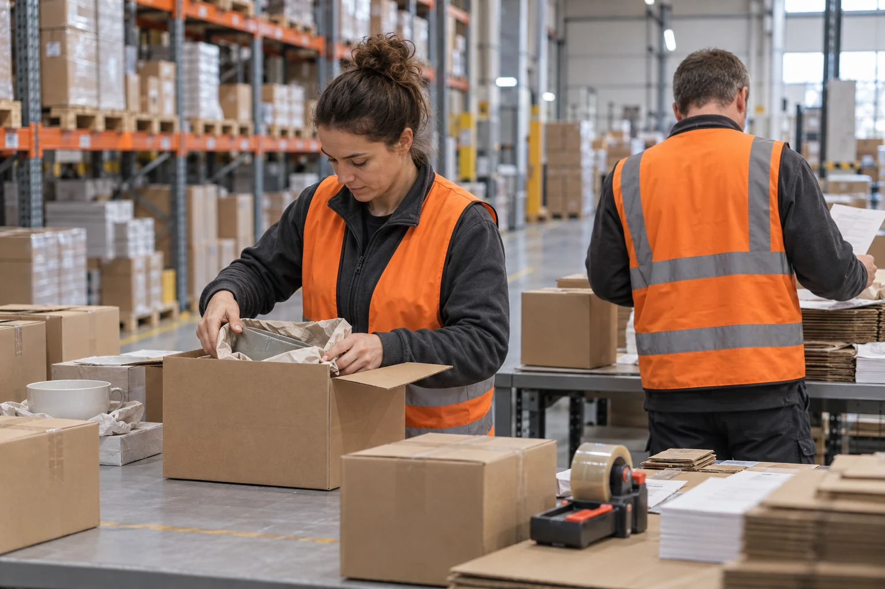

Company / Poznań, Poland
Close to the stock.
Clear about the role.
Crossmere is a fictional 86-person regional warehouse business, serving B2B stock owners in Poland and neighbouring EU markets from one 8,000 m² concept site.

The intended client
A warehouse partner
for steady regional stock.
We are set up in this concept for distributors, small manufacturers and campaign teams that need a defined place to hold and prepare packaged goods.
We do not claim a worldwide carrier network. The useful distinction is a visible local operation, specific goods limits and an agreed owner for each handover.
86 people.
Four working groups.
These fictional team allocations explain responsibility. They are not shift availability, service-level guarantees or professional certifications.
Receiving
Storage
Pick & pack
Coordination
One boundary
worth spelling out.
Customer goods remain the customer’s responsibility for classification and instruction. Carrier selection, transport arrangements and any cross-border requirements belong to separately agreed providers.
A concept, openly presented.
There is no physical Crossmere facility, real customer list or operational stock system. The images, company size and site plan were created for this website commission.
Use the enquiry to explore how a useful warehouse requirements conversation can work, with no real stock or contact information.